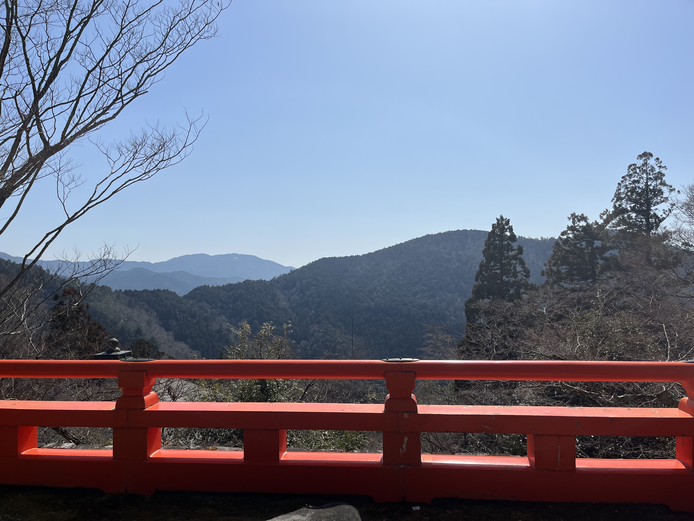
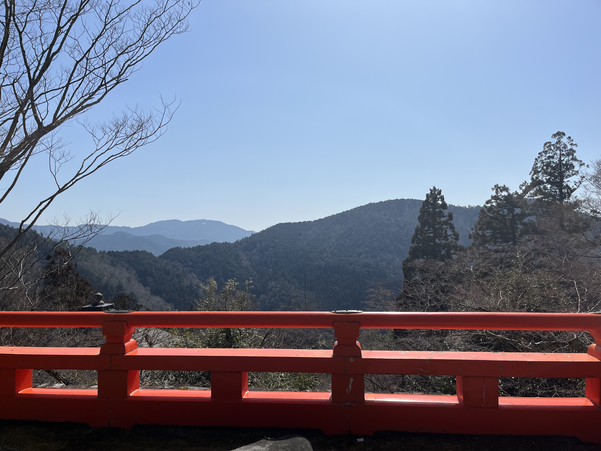

Kurama Temple is a Buddhist temple located in the mountains of Kurama in Kyoto, Japan. It is known for its stunning natural surroundings and serene atmosphere, which evoke a sense of wabi-sabi, a Japanese aesthetic that values simplicity, impermanence, and the beauty of imperfection. The temple's architecture and design reflect this aesthetic, with minimalist structures and gardens that harmonize with the natural environment. Additionally, Kurama Temple embodies the concept of iki, a term that describes a refined sense of style and sophistication. Visitors to the temple are encouraged to appreciate the subtle beauty of the surroundings and cultivate a sense of inner peace and tranquility. Overall, Kurama Temple represents a harmonious blend of wabi-sabi and iki aesthetics, which encourages visitors to connect with nature and appreciate the beauty in simplicity and imperfection.